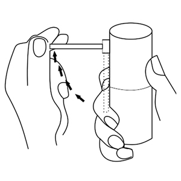
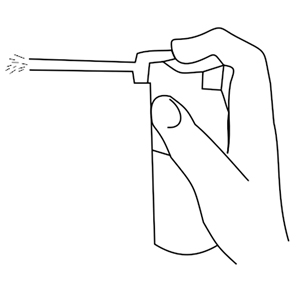
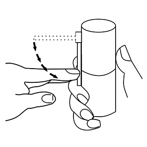

|
 |
| ОРАЛСЕПТ® (ORALSEPT®) benzydamine спрей д/мест. прим. дозир. | ||||||||||||||||||||||||||
|
Клинико-фармакологическая группа: НПВС для местного применения в ЛОР-практике и стоматологии Номер и дата регистрации: ЛП-№(001324)-(РГ-RU) от 21.10.22 Код ATX: A01AD02 |
Владелец регистрационного удостоверения: зарегистрировано Представительство: | |||||||||||||||||||||||||
Форма выпуска, состав и упаковка ◊ Спрей для местного применения дозированный в виде прозрачного раствора желто-зеленого цвета, с ароматом мяты перечной.
Вспомогательные вещества: метилпарагидроксибензоат, этанол 96%, глицерол (глицерин), ароматизатор мяты перечной 27198/14, натрия сахаринат, полисорбат 60, натрия гидрокарбонат, краситель хинолиновый желтый 70 (Е104), краситель индиготин 85% (Е132), вода очищенная. 30 мл (176 доз) - флаконы пластиковые из ПЭВП (1) с дозатором и складывающимся наконечником - пачки картонные. | ||||||||||||||||||||||||||
| ||||||||||||||||||||||||||
Описание препарата основано на официально утвержденной инструкции по применению и утверждено компанией-производителем для издания 2022 г. | ||||||||||||||||||||||||||
Фармакологическое действие |
Фармакокинетика |
Показания |
Режим дозирования |
Побочное действие |
Противопоказания |
Беременность и лактация |
Особые указания |
Передозировка |
Лекарственное взаимодействие |
Условия хранения и сроки годности |
Условия реализации
Фармакологическое действие
Бензидамин - НПВП, принадлежит к группе индазолов. Оказывает противовоспалительное и местное обезболивающее действие, обладает антисептическим действием против широкого спектра микроорганизмов, восстанавливает микроциркуляцию. Механизм действия препарата связан со стабилизацией клеточных мембран и ингибированием синтеза простагландинов. Бензидамин оказывает антибактериальное и специфическое антимикробное действие за счет быстрого проникновения через мембраны микроорганизмов с последующим повреждением клеточных структур, нарушением метаболических процессов и лизосом клетки. Обладает противогрибковым действием в отношении Candida albicans. Вызывает структурные модификации клеточной стенки грибов и их метаболических цепей, таким образом, препятствует их репродукции, что явилось основанием для применения бензидамина при воспалительных процессах в ротовой полости, включая инфекционную этиологию. Фармакокинетика
При местном применении хорошо всасывается через слизистые оболочки и быстро проникает в воспаленные ткани. Обнаруживается в плазме крови в количестве, недостаточном для получения системных эффектов. Выводится, в основном, почками и через кишечник в виде метаболитов или продуктов конъюгации. Показания
Симптоматическая терапия болевого синдрома воспалительных заболеваний полости рта и ЛОР-органов (различной этиологии) у взрослых и детей от 3 лет:
При инфекционных и воспалительных заболеваниях, требующих системного лечения, препарат Оралсепт® используется в составе комбинированной терапии. Режим дозирования
Применяется местно, после еды. Одна доза спрея соответствует 1 нажатию. Одна доза эквивалентна 0.17 мл раствора. Взрослым (в т.ч. пациентам пожилого возраста) и детям старше 12 лет - по 4-8 впрыскиваний 2-6 раз в день. Детям в возрасте 6-12 лет - по 4 впрыскивания 2-6 раз в день. Детям в возрасте 3-6 лет - по 1 впрыскиванию на каждые 4 кг массы тела, но не более 4 впрыскиваний (максимальная разовая доза) 2-6 раз в день. Продолжительность курса лечения - 7 дней; если после 7 дней лечения улучшение не наступает, необходимо проконсультироваться с врачом. Указания по применению 1. Удерживая флакон вертикально, поднять насадку колпачка под углом 90° к флакону (рис.1). 2. Ввести насадку в полость рта и нажать на колпачок (на рис.2 отмечено стрелкой) несколько раз, согласно рекомендуемой дозе. Период между двумя нажатиями должен быть не менее 5 секунд. 3. Вернуть насадку в первоначальное положение (рис.3). Внимание: перед первым применением следует несколько раз нажать на распылитель, направив его в воздух.  Рис 1.  Рис.2  Рис 3. Не превышайте рекомендуемую дозу. Перед применением проконсультируйтесь с врачом. Побочное действие
Табличное резюме нежелательных реакций Нежелательные реакции классифицировали по системно-органным классам и частоте с использованием следующих категорий: очень часто (≥1/10), часто (от ≥1/100 до < 1/10), нечасто (от ≥1/1000 до <1/100), редко (от ≥1/10000 до <1/1000), очень редко (<1/10000), частота неизвестна (не может быть оценена на основе имеющихся данных). В каждой группе нежелательные реакции представлены в порядке уменьшения их серьезности.
Если любые из указанных в инструкции нежелательных реакций усугубляются, или отмечаются любые другие нежелательные реакции, не указанные в инструкции, следует немедленно сообщить об этом врачу. Противопоказания
С осторожностью:
Применение при беременности и кормлении грудью
Не следует применять при беременности и в период грудного вскармливания. Особые указания
При применении препарата Оралсепт® возможно развитие реакций гиперчувствительности. В этом случае рекомендуется прекратить лечение и проконсультироваться с врачом для назначения соответствующей терапии. У ограниченного числа пациентов присутствие язв в горле и полости рта может указывать на наличие более серьезной патологии. Если симптомы не проходят в течение более 3 дней, необходимо проконсультироваться с врачом. Применение препарата Оралсепт® не рекомендуется у пациентов с повышенной чувствительностью к ацетилсалициловой кислоте или другим НПВП. Препарат Оралсепт® следует использовать с осторожностью у пациентов с бронхиальной астмой, т.к. в данном случае возможно развитие бронхоспазма. Препарат содержит 11.76 об.% этанола, то есть до 16.32 мг на дозу (одно впрыскивание), что равно 0.4 мл пива, 0.16 мл вина на дозу. Содержание этанола в разовой дозе:
Данный препарат содержит менее 1 ммоль (23 мг) натрия в разовой дозе для взрослых и детей, то есть по сути не содержит натрия. Препарат Оралсепт® содержит парагидроксибензоаты, которые могут вызывать аллергические реакции. Влияние на способность к управлению транспортными средствами и механизмами Препарат не оказывает влияния на способность к управлению автомобилем и выполнению потенциально опасных видов деятельности, требующих повышенной концентрации внимания и быстроты психомоторных реакций, или иных видов деятельности, требующих повышенного внимания. Передозировка
В настоящее время о случаях передозировки препарата не сообщалось. Симптомы: при применении препарата в соответствии с инструкцией по медицинскому применению передозировка маловероятна. При случайном проглатывании препарата возможны следующие симптомы: рвота, спазмы в животе, беспокойство, страх, галлюцинации, судороги, атаксия, лихорадка, тахикардия, угнетение дыхания. Лечение: симптоматическое - очистить желудок, вызвав рвоту, или промыть желудок, используя желудочный зонд (под наблюдением врача); обеспечить медицинское наблюдение, поддерживающую терапию и необходимую гидратацию. Антидот не известен. Лекарственное взаимодействие
Исследований взаимодействия с другими лекарственными препаратами не проводилось. |
||||||||||||||||||||||||||
Вернуться наверх |
||||||||||||||||||||||||||
Copyright © Справочник Видаль «Лекарственные препараты в России», Москва, Россия